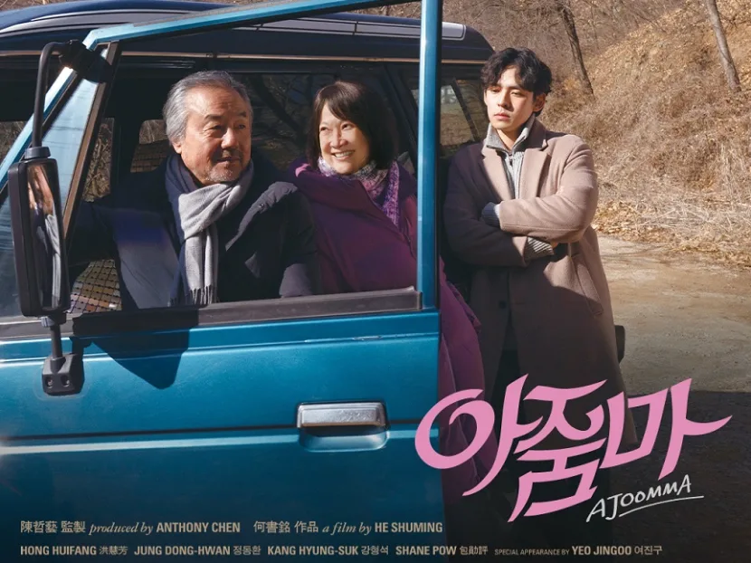

Movies
Movies produced by local directors and acted by local artistes
Movies produced by local directors and acted by local artistes
Long Long Time Ago (我们的故事) |
||
|
Long Long Time Ago is a 2016 Singaporean period film directed by Jack Neo. The film commemorates Singapore's 50th birthday and stars Aileen Tan, Mark Lee and Wang Lei as the main casts. It is released on 4 February 2016 in Singapore. | ||
 |
Find out more |
Ilo Ilo (爸妈不在家) |
|
Ilo Ilo is a 2013 Filipino-Singaporean-Taiwanese drama film. Ilo Ilo premiered at the 2013 Cannes Film Festival as part of the Directors' Fortnight on 19 May 2013. At the festival, the film was awarded the Caméra d'Or award, thus becoming the first Singaporean feature film to win an award at the Cannes Film Festival. | ||
 |
Find out more |
Ah Boys to Men 4 |
|
After leaving the military, Lobang, Wayang King, Sergeant Ong, and Ken Chow are all busy with their respective career as civilians. That's until they are called back to serve the nation again under the Singapore Armed Forces' Armoured Formation. Now they must juggle between work and their reservist duties. What hilarious situations will happen as they train together and their military roles are reversed? There'll be new enemy threats and their brotherhood will be put to the test. | ||
 |
Find out more |
Ajoomma (花路阿朱妈) |
|
A widow obsessed with Korean soap operas travels abroad for the first time in her life to Seoul and finds more than she had bargained for. The film garnered four nominations at the 59th Golden Horse Awards, with Hong being the first Singaporean to be nominated for Best Leading Actress. It premiered at the 2022 Busan International Film Festival on 7 October 2022 and opened in local cinemas on 27 October 2022. The film was selected as the Singaporean entry for the Best International Feature Film at the 95th Academy Awards. | ||
|  |
Find out more |
|